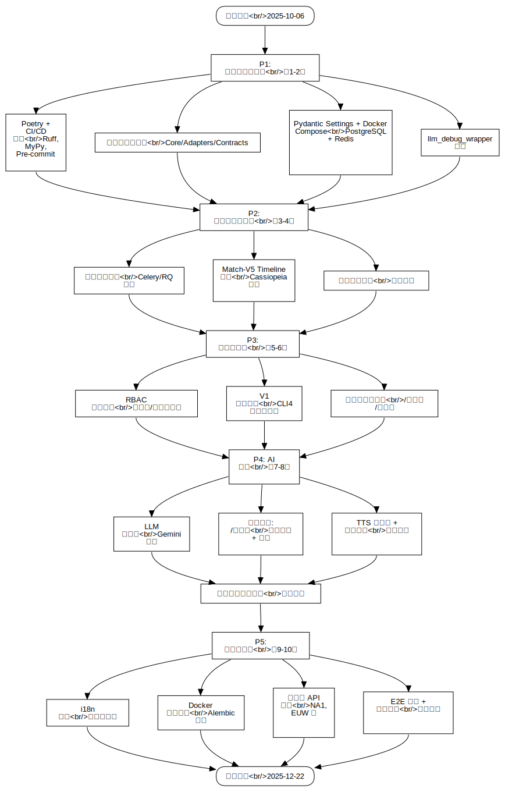

Flowchart by Mermaid
FCFlowchart
Untitled
::
Flowchart by Mermaid
Description
none
Diagrams

Flowchart Diagram by Mermaid
Properties
Name
Value
name
Flowchart by Mermaid
Owned Elements
Flowchart Diagram by Mermaid
项目启动<br/>2025-10-06
P1: 基础设施与连接<br/>第1-2周
Poetry + CI/CD 配置<br/>Ruff, MyPy, Pre-commit
六边形架构骨架<br/>Core/Adapters/Contracts
Pydantic Settings + Docker Compose<br/>PostgreSQL + Redis
llm_debug_wrapper 实现
P2: 数据处理与实时<br/>第3-4周
异步任务队列<br/>Celery/RQ 配置
Match-V5 Timeline 抓取<br/>Cassiopeia 集成
实时比赛监控<br/>轮询逻辑
P3: 评分与社区<br/>第5-6周
RBAC 权限系统<br/>管理员/赞助商检查
V1 评分算法<br/>CLI4 实验室设计
排行榜与通缉榜<br/>/排行榜 /通缉榜
P4: AI 赋能<br/>第7-8周
LLM 适配器<br/>Gemini 集成
核心功能: /讲道理<br/>延迟回复 + 分析
TTS 适配器 + 语音播放<br/>豆包集成
赞助商自定义音频<br/>情感合成
P5: 优化与探索<br/>第9-10周
i18n 框架<br/>多语言支持
Docker 生产部署<br/>Alembic 迁移
多区域 API 路由<br/>NA1, EUW 等
E2E 测试 + 压力测试<br/>性能分析
项目完成<br/>2025-12-22